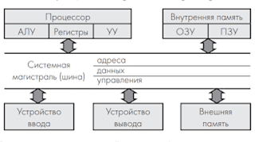
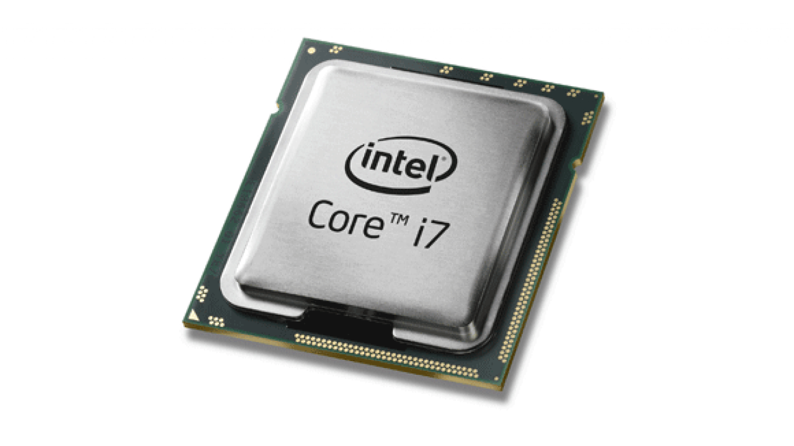
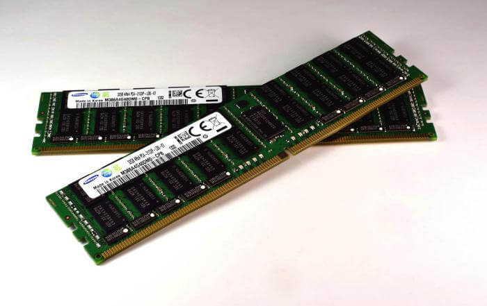
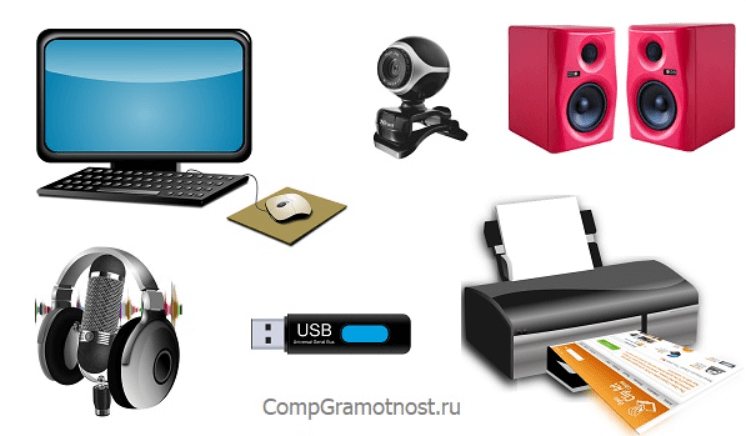

Аппаратное обеспечение персонального компьютера — система взаимосвязанных технических устройств, выполняющих ввод, хранение, обработку и вывод информации.Любой компьютер состоит из следующих устройств:
1) процессор;
2) память (внутренняя и внешняя);
3) устройства ввода информации;
4) устройства вывода информации.
Системная шина — подсистема, служащая для передачи данных между функциональными блоками компьютера. В устройстве шины можно различить механический, электрический (физический) и логический (управляющий) уровни.

Шина состоит из трех частей:–шина адреса, которая используется для указания адреса устройства (или ячейки памяти), к которому обращается процессор;–шина данных, по которой передается информация;–шина управления, регулирующая процесс передачи данных. Подключение всех внешних устройств к шине обеспечивается через соответствующие адаптеры или контроллеры.
Ознакомтесь с видео роликом:
Магистрально-модульный принцип (принцип открытой архитектуры) построения современных компьютеров заключается в том, что все устройства взаимодействуют между собой через системную магистраль передачи данных (системную шину);
–каждое устройство конструктивно оформляется в виде отдельного блока (модуля), который легко подключается к общей схеме через один или несколько разъемов.
Модульный принцип позволяет комплектовать нужную конфигурацию компьютера и производить при необходимости модернизацию компьютера.
Процессор — устройство, обеспечивающее преобразование информации и управление другими устройствами компьютера. Основная работа процессора заключается в двух действиях — считывании из программы, находящейся в ОЗУ, очередной команды и выполнении действий, указанных в этой команде. Компоненты процессора:
• АЛУ (арифметико-логическое устройство) — выполняет логические и арифметические операции над данными;
• УУ (устройство управления) — управляет работой процессора с помощью электрических сигналов;

• регистры — используются для временного хранения данных и результатов операций над ними.
Основные характеристики процессора:
• разрядность — число двоичных разрядов, одновременно обрабатываемых при выполнении одной команды. Большинство современных процессоров — 64-разрядные;
• тактовая частота — это количество тактов процессора в секунду. Чем выше тактовая частота процессора, тем выше его производительность.
Тактовая частота:
–определяется временем между активными переходами сигнала с одного значения на другое;
–измеряется в герцах, определяющих число активных переходов в секунду.
Внутренняя память — это запоминающее устройство, напрямую связанное с процессором и предназначенное для хранения выполняемых программ и данных, непосредственно участвующих в вычислениях.
Внутренняя память, в свою очередь, делится на постоянную (ПЗУ) и оперативную (ОЗУ) память.

• Постоянная память (ПЗУ — постоянное запоминающее устройство). В постоянной памяти хранится информация, необходимая для первоначальной загрузки компьютера в момент включения питания.
• Оперативная память (ОЗУ — оперативное запоминающее устройство). Из оперативной памяти процессор берет программы и исходные данные для обработки, в нее он записывает полученные результаты. Оперативная память работает очень быстро, содержащиеся в ней данные сохраняются до тех пор, пока компьютер включен; при выключении компьютера содержимое оперативной памяти стирается.
Внешняя память.
Для хранения программ и данных в ПК используются устройства различных типов: накопители на магнитных лентах (стримеры) и дисковые накопители.
К дисковым накопителям относятся:

• накопители на гибких дисках;
• накопители на жестких дисках;
• накопители на магнитооптических дисках;
• накопители на оптических дисках: CD, DVD, blu-Ray Disk
Устройства ввода позволяют вводить информацию в компьютер. Основными устройствами ввода являются клавиатура, манипулятор мышь, сенсорный экран. Устройства вывода позволяют передать информацию от компьютера в доступной человеческому восприятию форме. Наиболее распространенными устройствами вывода являются монитор и принтер.
Дополнительные устройства:
• устройства ввода (сканер, видео- и веб-камера, цифровой фотоаппарат, микрофон, трекбол, тачпад, световое перо, графический планшет, джостик и др.);
• устройства вывода (плоттер (графопостроитель), колонки, наушники, проектор);
• устройства хранения (USB флеш-накопитель, стример, zipнакопитель, магнитооптический накопитель и др.);
• устройство обмена (модем).
Практическое задание
Используя программный продукт EVA. Произведите сборку системного блока.
Последовательность сборки запишите в отчет.